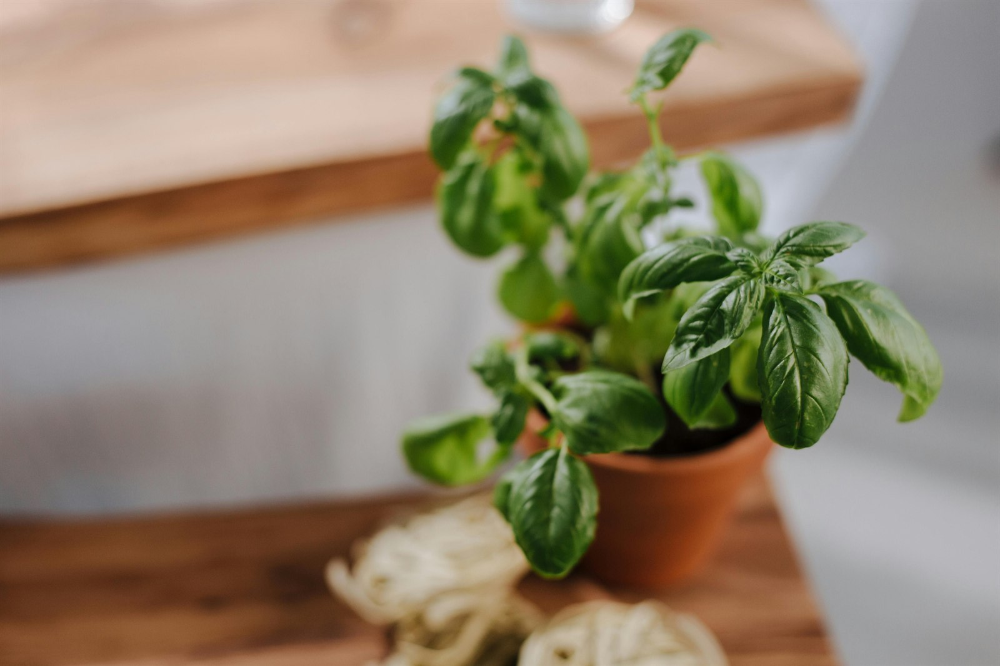
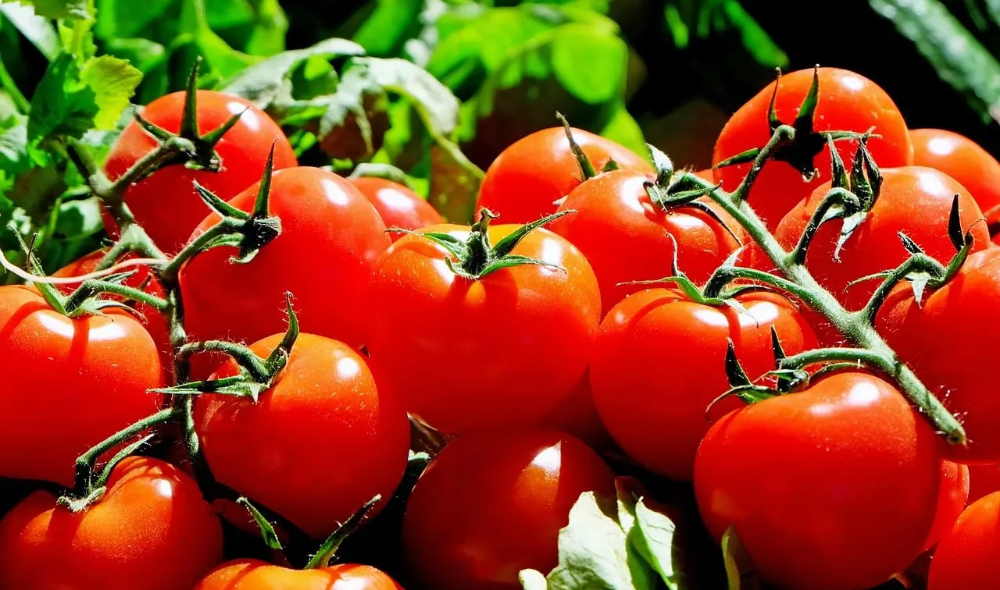
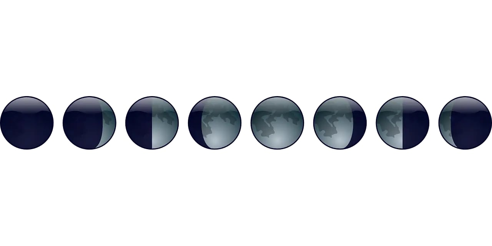
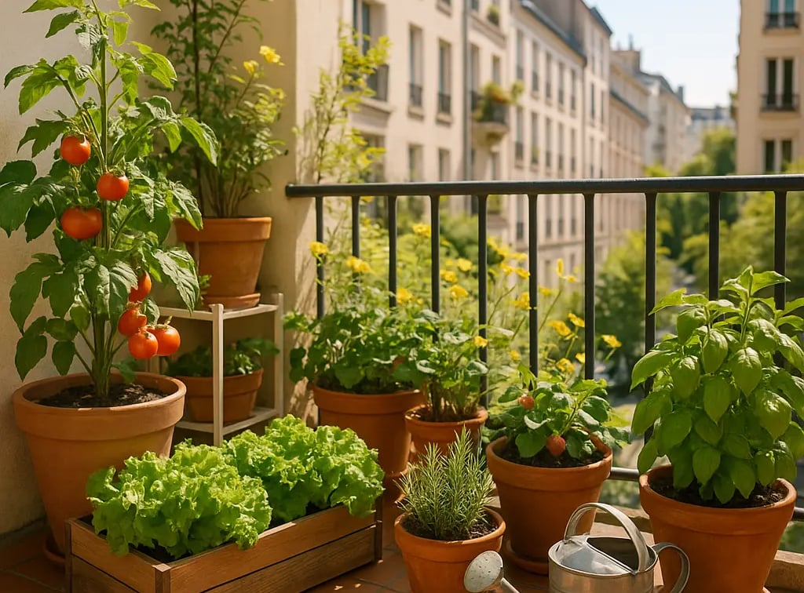
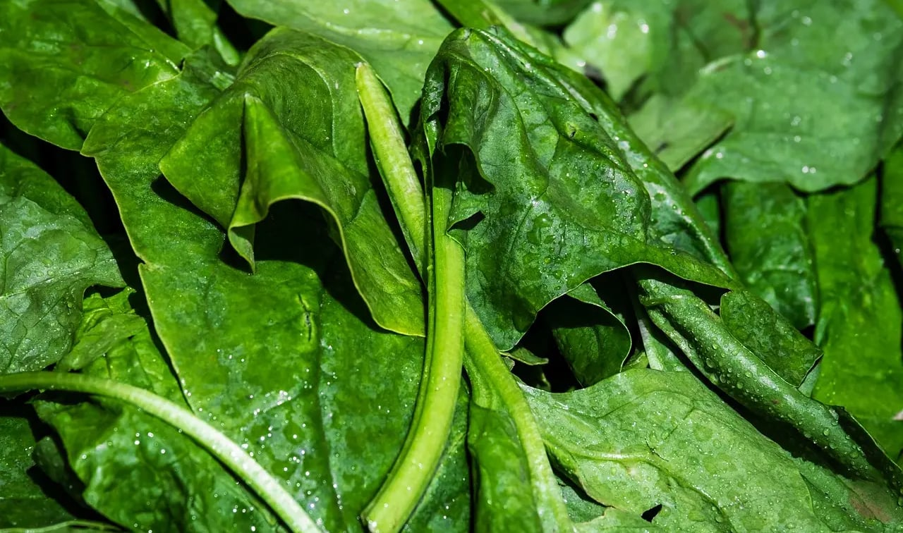
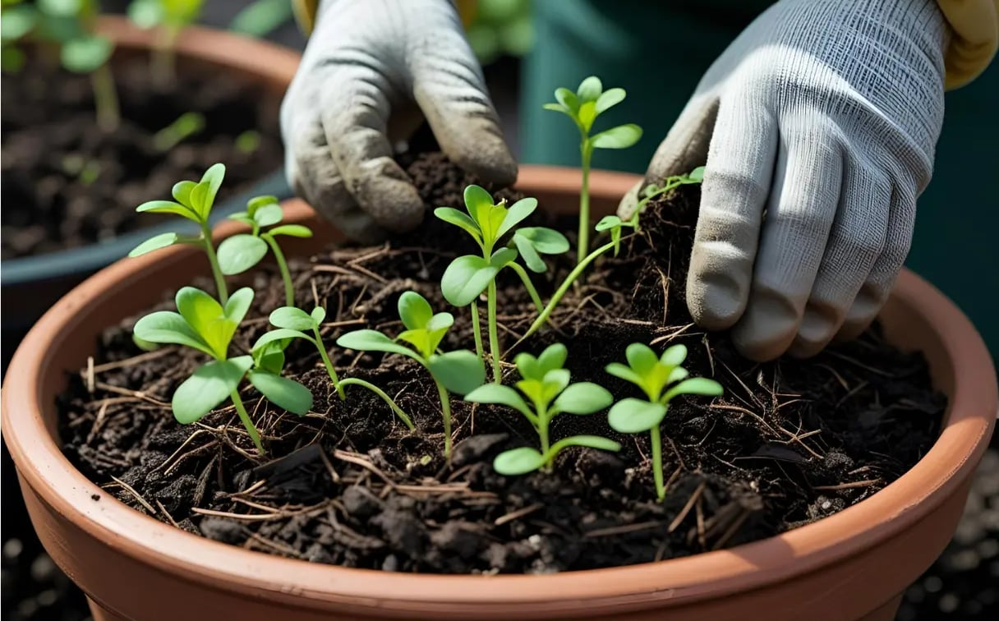
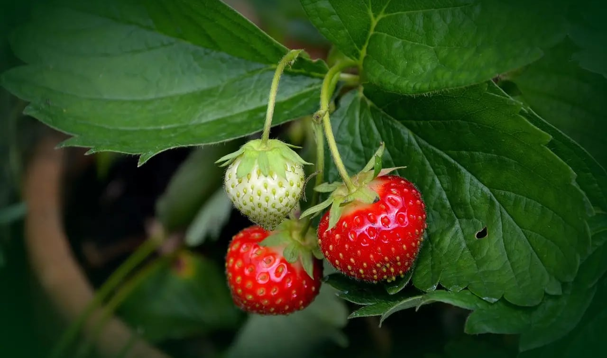
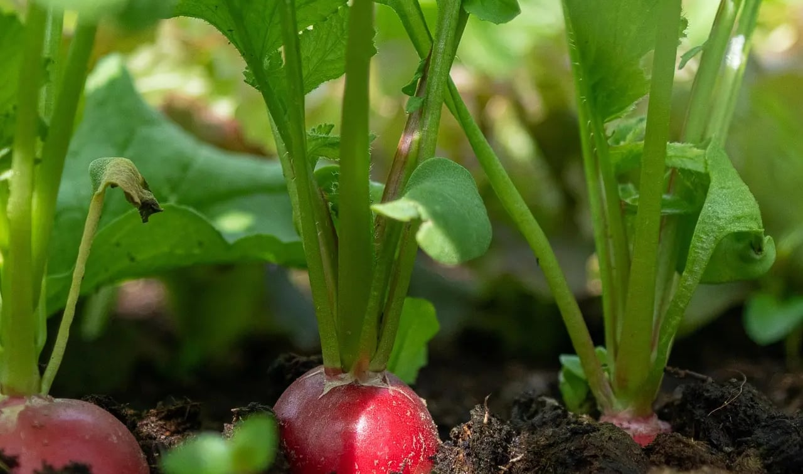
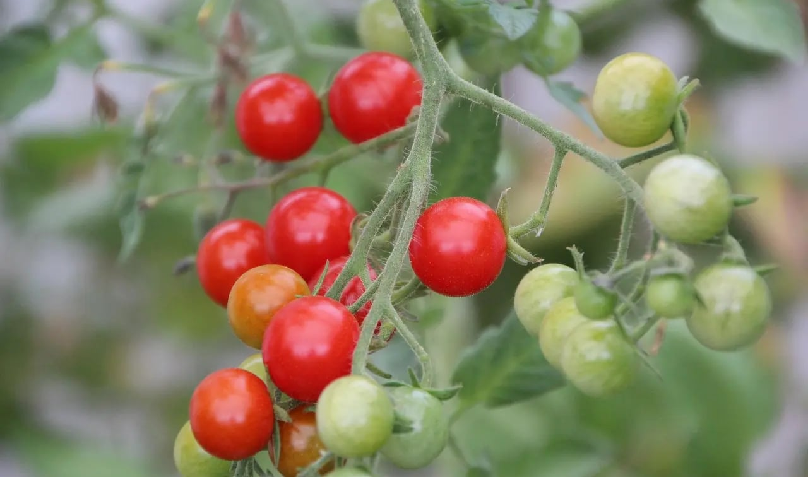
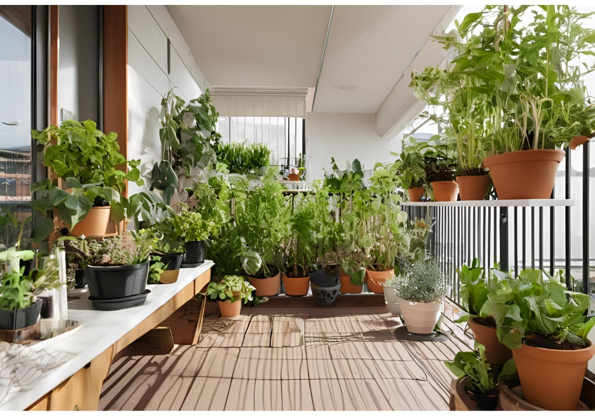

Fiches Techniques
Guide complet pour cultiver du basilic sur son balcon
Basilic sur balcon : semis, pot, soleil, arrosage, pincement et récoltes régulières. Le guide simple pour garder un basilic touffu et parfumé en...
Des conseils simples et concrets pour aménager son balcon, choisir les bonnes plantes et créer un petit coin de verdure facile à entretenir.
Aucun article ne correspond à cette recherche.

Basilic sur balcon : semis, pot, soleil, arrosage, pincement et récoltes régulières. Le guide simple pour garder un basilic touffu et parfumé en...

Apprenez à cultiver des poivrons sur son balcon : variétés compactes, pot idéal, soleil, arrosage, entretien, récolte et astuces pour obtenir des...

Découvrez comment créer un jardinage en lasagnes sur balcon pour un potager fertile, écologique et simple, même en ville avec peu d’espace. A vous...

Apprenez à créer un potager balcon en combinant semis faciles et arrosage à l’eau de cuisson, pour économiser l’eau, enrichir le sol et cultiver...

Plantes qui survivent à la canicule : découvrez les espèces résistantes à la chaleur pour un balcon fleuri et productif tout l’été, même par forte...
Découvrez les meilleures plantes grimpantes pour créer de l'intimité en ville. Apprenez à choisir et entretenir des plantes grimpantes adaptées à...

Pommes de terre sur balcon : sac de culture, variétés précoces, buttage, arrosage et récolte propre. Un guide clair pour produire facilement en pot.

Tomates sur balcon : variétés adaptées, pot généreux, soleil, tuteur, arrosage régulier et prévention des maladies. Le guide pour récolter en pot...

Petits fruits en pot sur balcon : fraisiers, framboisiers nains, myrtilles, groseilliers et cassissiers. Le guide pour récolter des fruits même en...

Réduction de la consommation d’eau sur balcon : découvrez 10 astuces simples, économiques et durables pour arroser moins tout en gardant vos...

Découvrez 10 insectes utiles sur un balcon pour un potager sain, productif et écologique : coccinelles, abeilles solitaires, syrphes… et comment...

Avec ce calendrier lunaire balcon, apprenez à semer, planter et récolter au bon moment sur votre terrasse ou balcon. Adoptez les bons gestes selon...

Découvrez comment cultiver facilement des fleurs comestibles et mellifères sur votre balcon pour un jardin gourmand, écologique, et un véritable...

Jardiner sur un balcon : exposition, pots, premières cultures, arrosage, organisation et gestes de saison. Le guide pour créer un coin vivant en...

Plantes pour un balcon plein soleil : découvrez les meilleures espèces résistantes au soleil, faciles à cultiver, pour embellir et réussir votre...

Apprenez à cultiver des épinards sur son balcon : choix du pot, exposition, arrosage, entretien, récolte et astuces pour réussir vos épinards en...

Apprenez à récupérer l’eau de pluie sur un balcon, même sans gouttière, grâce à des astuces simples, écologiques et économiques pour préserver...

Découvre comment réussir le paillage sur balcon grâce à des techniques simples, des types de paillis adaptés aux pots, et des conseils pour un...

Fraises sur balcon : variétés remontantes, pot adapté, soleil doux, paillage, stolons et récoltes parfumées. Le guide pour réussir des fraisiers en...

Crée tes propres DIY pots pour le balcon à partir d’objets du quotidien : boîtes de conserve, passoires, briques… Une solution écolo, simple et...

Radis sur balcon : semis rapides, pot peu profond, arrosage régulier et récoltes croquantes. Un guide simple pour enchaîner les fournées sans...

Découvrez comment protéger son balcon des nuisibles naturellement : astuces simples pour lutter contre pucerons, limaces et cochenilles sans...

Créez votre balcon pour pollinisateurs ! Attirez abeilles & papillons en ville avec notre guide : plantes mellifères, abris et points d'eau...

Laitues sur balcon : variétés faciles, semis, arrosage, ombre légère et récoltes échelonnées pour garder des salades tendres presque toute l’année.

Balcon à l’ombre : quelles plantes choisir, comment arroser, organiser l’espace et éviter les erreurs classiques. Un guide concret pour cultiver...

Tomates cerises sur balcon : variétés compactes, pot adapté, soleil, arrosage, taille et récolte. Un guide clair pour produire facilement en pot...

Légumes faciles à cultiver sur balcon : ceux qui poussent vite, demandent peu de profondeur ou supportent bien la culture en pot. Une sélection...

Apprends à utiliser le compost sur balcon pour nourrir tes plantes, réduire tes déchets et jardiner en ville facilement. Astuces, conseils et...

Calendrier du jardin de balcon : semis, plantations, tailles, protection et récoltes mois par mois pour suivre le bon rythme sans se disperser.

Plantes aromatiques sur balcon : les meilleures variétés selon l’exposition, avec conseils simples pour récolter souvent et garder des pots...

Plantes idéales pour un balcon durable : résistantes, écologiques et faciles à entretenir pour un jardin urbain éco-responsable, fleuri et...

Matériel pour jardin de balcon : les indispensables vraiment utiles pour commencer sans s’encombrer, bien choisir ses pots et éviter les achats...

Découvrez nos solutions de compostage sur balcon en zone urbaine : compactes, écologiques et pratiques pour réduire vos déchets et nourrir vos...

Découvrez nos 10 astuces pour démarrer un jardin sur balcon : cultivez facilement un potager balcon, des plantes en pot et créez un espace vert...

Évitez les erreurs courantes pour jardiner sur un balcon : optimisez votre espace, cultivez un potager sur votre balcon et réussissez vos...